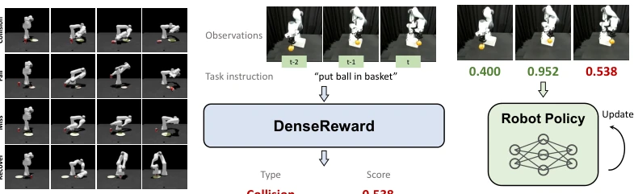
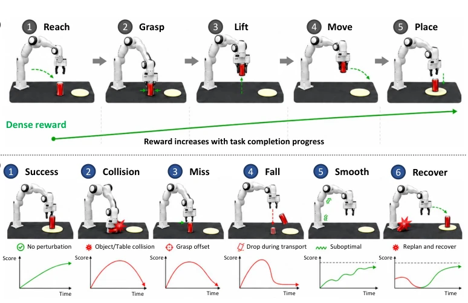
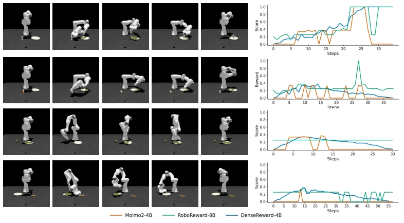
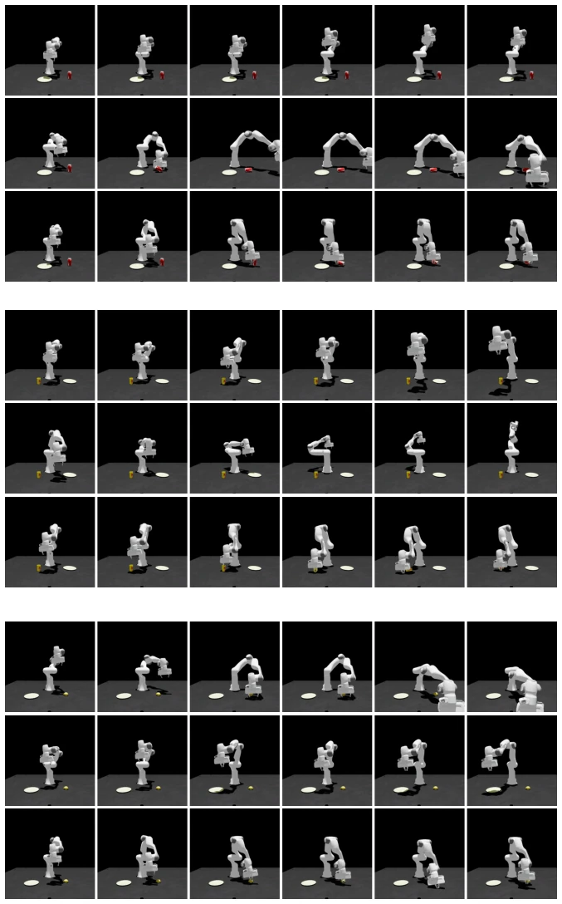
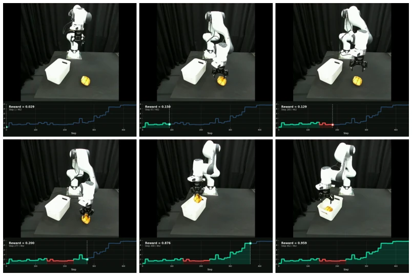
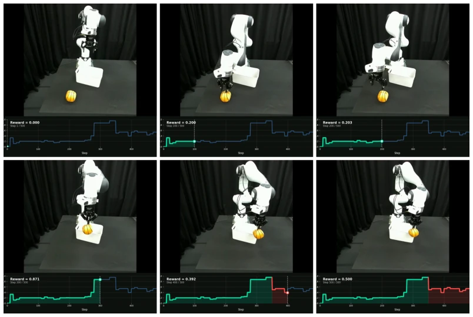

This DenseReward work attempts to solve the longstanding "sparse reward" problem in reinforcement learning by using VLM to score robots. Its highlight lies in not only requiring success data but also specifically developing a "failure synthesis" pipeline, simulating scenarios such as collisions, grasp failures, drops, etc., to compile 27k data points with dense rewards. This is much more substantial than simply truncating success trajectories like RoboReward [21]. However, whether the simulated failure data can fully cover the physical uncertainties of the real world remains questionable. Although the real-robot experiments performed well, they were after all on relatively simple tasks involving Franka; facing more complex tool use or long-horizon tasks, the generalization of dense rewards remains questionable. Overall, it is a pragmatic "data-driven" approach, fine-tuned based on Qwen3-VL, but do not expect it to solve all chaos in the physical world.
Reinforcement learning holds great potential in the robotics field, but the deployment bottleneck lies in the lack of reliable dense reward signals. Existing VLM reward models mostly rely on success demonstrations, lacking failure samples, leading to models unable to understand "why failure" [21]. Like RoboReward [21] and Robometer [20], although they attempt to use preference data or sub-optimal trajectories, essentially they remain "pseudo-failures", unable to reflect physical dynamics such as collisions and grasp offsets during real execution. Furthermore, existing models mostly output trajectory-level binary labels, unable to provide fine-grained feedback for intermediate steps, leading to difficulty in credit assignment in long-horizon tasks [12]. Therefore, how to acquire diverse failure data at low cost and train dense reward models becomes key to improving policy learning efficiency.

Figure 1: Overview. We present a dense robotic reward model for vision-language-guided manip- ulation. (a) We curate a dataset with 27k episodes by automatically producing diverse trajectories across different failure modes, providing scalable dense reward annotations. (b) Given a task instruc- tion and observations consisting of the current frame and historical frames, DenseReward predicts a per-timestep dense reward score that reflects task progress. Unlike binary success/failure labels, this dense reward provides fine-grained feedback for intermediate states. (c) The predicted rewards can be used in downstream reinforcement learning for policy improvement.
The overall process is divided into three parts: data generation, failure synthesis, and model training. First, decompose operations into five stages: Reach, Grasp, Lift, Move, Place, automatically planning trajectories based on simulation environments. Second, synthesize failure modes through targeted perturbations: disabling collision detection leads to collision, offsetting grasp target leads to Miss, rotating during movement leads to Fall, injecting noise leads to Smooth, and replanning after collision leads to Recover. This avoids manual annotation, generating 27k data points with dense frame-level rewards. Finally, fine-tune the DenseReward model based on Qwen3-VL-4B-Instruct, inputting task instructions, current frames, and historical frames, outputting scalar rewards in the [0,1] interval. The model retains three decimal places to capture subtle progress differences, supporting downstream MPC and RL optimization. Additionally, training data fuses multi-source data such as DROID, Isaac Sim, and RoboSuite to ensure scene diversity.

Figure 2: Overview of Automated Data Generation and Failure Synthesis. (a) Five-phase ma- nipulation with dense rewards. (b) Targeted perturbations synthesize diverse failure modes.
On the dense reward prediction task, DenseReward average MAE is 0.081, significantly better than Qwen3-VL-4B (0.289) and RoboReward-8B (0.230). In MPC experiments, it guides the robot to reduce the average minimum distance to 0.229, outperforming RoboReward. In RL fine-tuning, combined with PPO, it improved success rate on the LIBERO benchmark; real-robot DSRL experiments improved success rate from 40% to 80% in the "stacking cups" task. Ablation studies show that removing failure data causes MAE to rise to 0.1312, and using two frames of historical frames works best, too much history instead introduces noise. This proves that failure data is crucial for dense reward modeling.

Figure 3: Qualitative comparison of dense reward prediction. DenseReward better follows task progress than strong VLM and robotic reward model baselines across success and failure trajectories.

Figure 7: Qualitative comparison of model predictive control for can, cup, and lemon.

Figure 8: DenseReward captures failure and recovery in a real-world trajectory. The robot initially fails to grasp the ball, resulting in degraded reward predictions. After the robot recovers and regrasps the ball, DenseReward increases the predicted reward to a high final score. This shows that DenseReward provides accurate progress feedback for recovery behavior.

Figure 9: DenseReward captures collision in a real-world trajectory. The predicted reward in- creases as the robot grasps the ball and makes progress toward the basket, but drops after a collision disrupts the placement. This shows that DenseReward distinguishes transient progress from unsuc- cessful task completion.